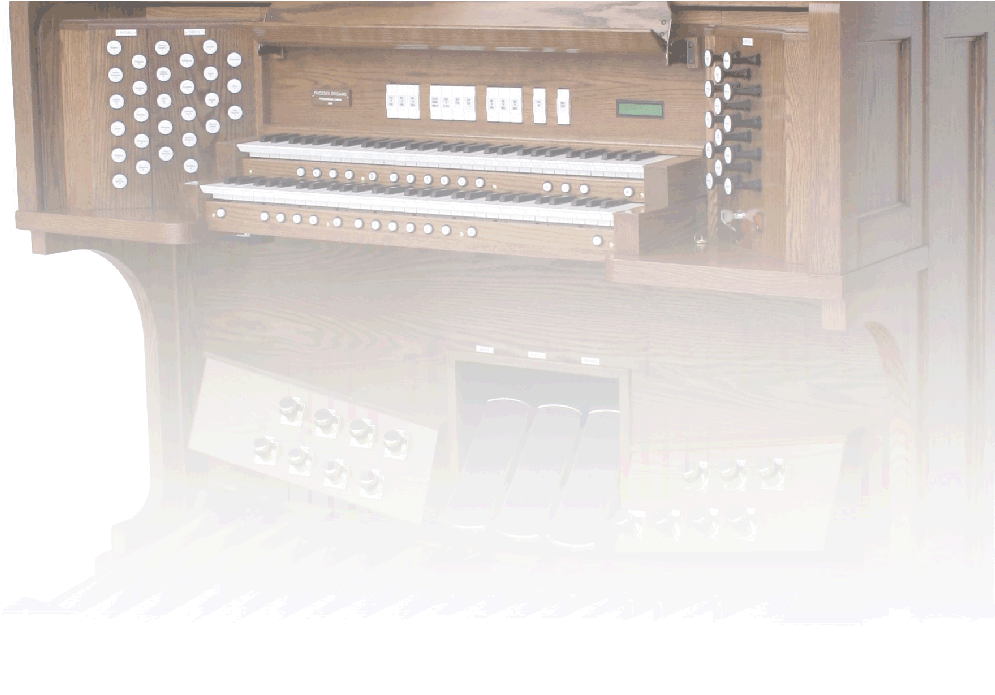
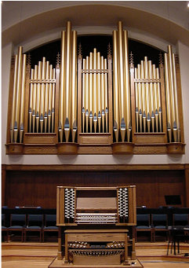

D.L. Simmons & Company Church Organs

SERVING: ALABAMA / FLORIDA / MISSISSIPPI / LOUISIANA / GEORGIA

DRAWKNOB ORGAN CONSOLES
Phoenix drawstop consoles are available in standard North American style, French terraced style, or English style. The suggested models and specifications found on these pages are provided only as a guide or starting point. All of our drawstop organs are custom-built to suit the individual requirements of each church or organist. Our standard moving drawknob and tab components are identical to those used by top pipe organ companies. While we prefer not to offer lighted drawknobs as an alternative, we will use them for those with budget limitations yet have a desire for drawknobs.
Choose from below for more information:
PDL 240
PD 245
PD 346
PD 350
PD 364
PD 472 - 490
French Terraced & English Consoles
Choose from below for more information:
PDL 240
PD 245
PD 346
PD 350
PD 364
PD 472 - 490
French Terraced & English Consoles


WEBSITE CONTENTS COPYRIGHT© 2016
DL SIMMONS & COMPANY CHURCH ORGANS
DL SIMMONS & COMPANY CHURCH ORGANS